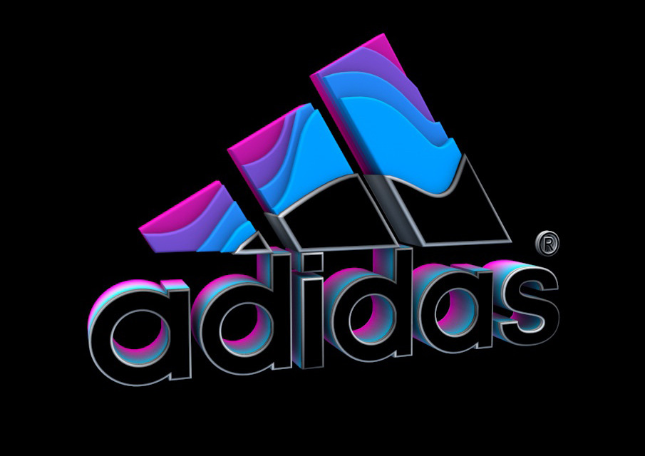

About the Company

Adidas AG (German pronunciation: ['adi?das]) (stylised as ?did?s since 1949) is a multinational corporation, founded and headquartered in Herzogenaurach, Germany, that designs and manufactures shoes, clothing and accessories. It is the largest sportswearmanufacturer in Europe, and the second largest in the world, after Nike. It is the holding company for the Adidas Group, which consists of the Reebok sportswear company, TaylorMade golf company (including Ashworth), Runtastic, an Austrian fitness technology company, and 8.33% of Bayern Munich, the football club. Adidas' revenue for 2016 was listed at €19.29 billion. The company was started by Adolf Dassler in his mother's house; he was joined by his elder brother Rudolf in 1924 under the name Dassler Brothers Shoe Factory. Dassler assisted in the development of spiked running shoes (spikes) for multiple athletic events. To enhance the quality of spiked athletic footwear, he transitioned from a previous model of heavy metal spikes to utilising canvas and rubber. Dassler persuaded U.S. sprinter Jesse Owens to use his hand made spikes at the 1936 Summer Olympics. In 1949, following a breakdown in the relationship between the brothers, Adolf created Adidas, and Rudolf established Puma, which became Adidas' business rival. Adidas' logo is three stripes, which is used on the company's clothing and shoe designs as a marketing aid - Adidas bought the branding in 1952 from Finnish sports company Karhu Sports; the branding became so successful that Dassler described Adidas as "The three stripes company".[7][8][9] The brand name is uncapitalized and is stylized with a lower case "a".